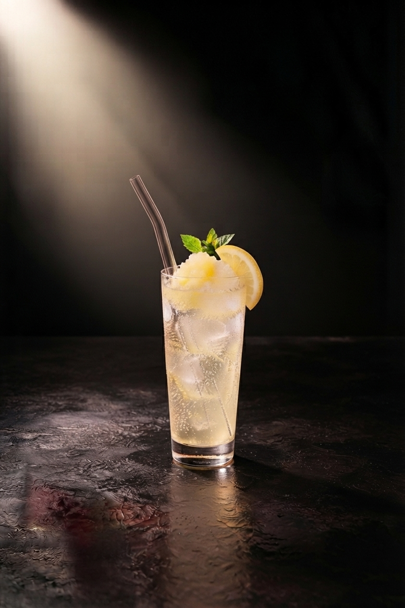
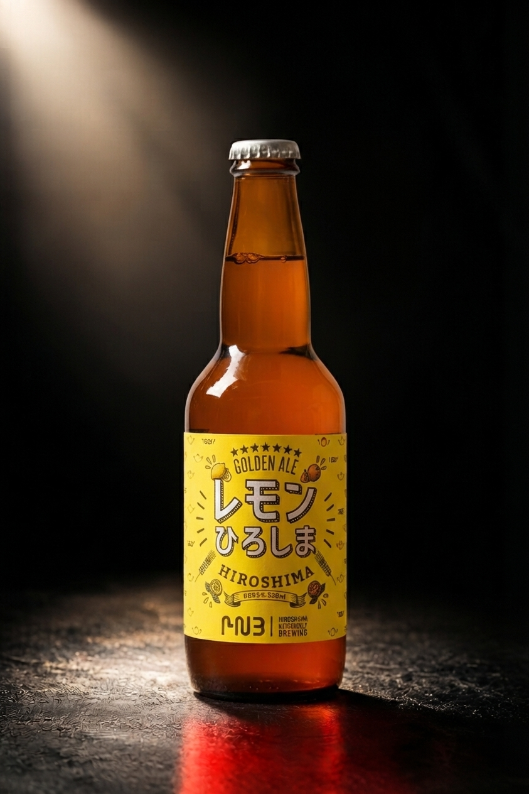
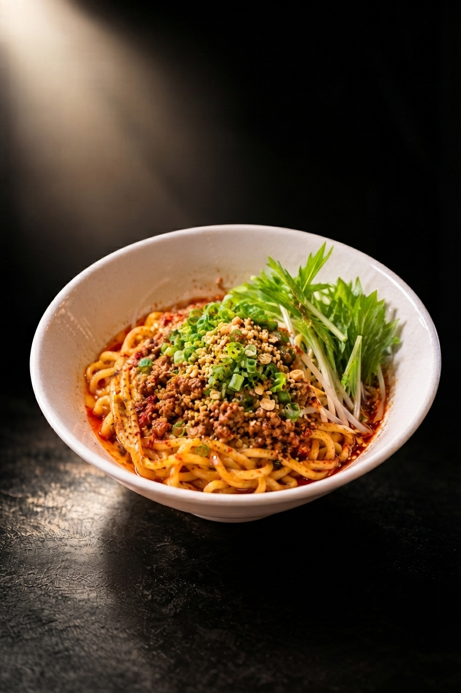
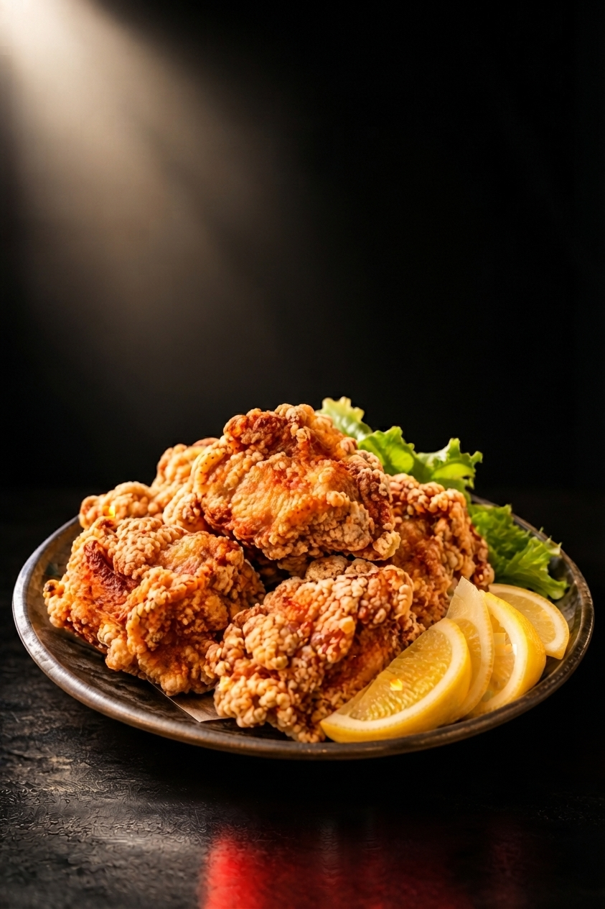

広島レモンサワー
¥750(税込)レモンサワーの上に、キンキンに冷えたレモンフローズンを載せています。
広島レモン農家から仕入れたレモンを皮まで使うことで際立つ清涼感！年中お楽しみいただけます。
【期間】10月〜12月：グリーンレモン / 1月〜5月：イエローレモン


レモンサワーの上に、キンキンに冷えたレモンフローズンを載せています。
広島レモン農家から仕入れたレモンを皮まで使うことで際立つ清涼感！年中お楽しみいただけます。
【期間】10月〜12月：グリーンレモン / 1月〜5月：イエローレモン

広島レモンサワーのノンアルコールVer.です。
爽やかな酸味とすっきりした炭酸が心地よい一杯です。
【期間】10月〜12月：グリーンレモン / 1月〜5月：イエローレモン

「株式会社カナデル」様と業務提携！
「G7広島サミット」でも提供された特別なビールです。
瀬戸内で栽培されたこだわりのレモンを使用しています。

「AKISETO」の新しい看板商品。スタッフが開発しました。
広島産のトマトとブラッドオレンジを使用し、広島の熱い誇りを表現。
カクテル、焼酎ソーダ割、ジュースからお選びいただけます。

刺激的な山椒の痺れと濃厚な胡麻のコクが癖になる、広島名物。
シメの一杯にはもちろん、ガツンと効いたスパイスがお酒のおつまみにも最高です。

1個あたり約80gのゲンコツサイズの唐揚げが大人気！
外はカリッと、中はジューシーに仕上げた自慢の名物です。
皆様のご来店を心よりお待ちしております